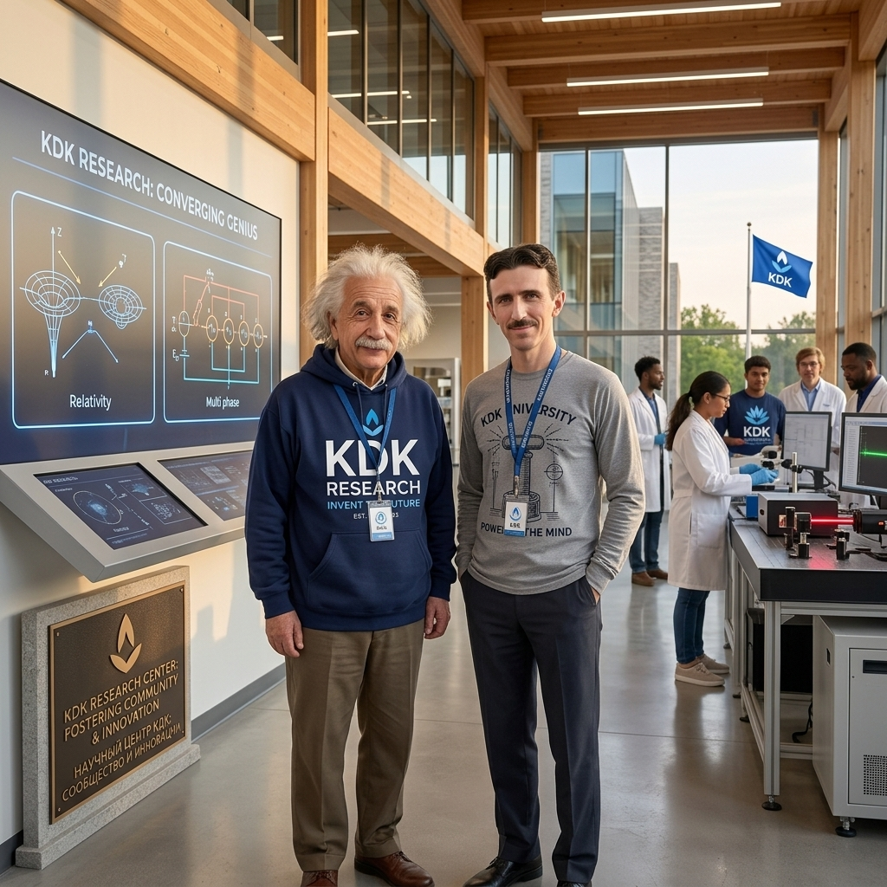
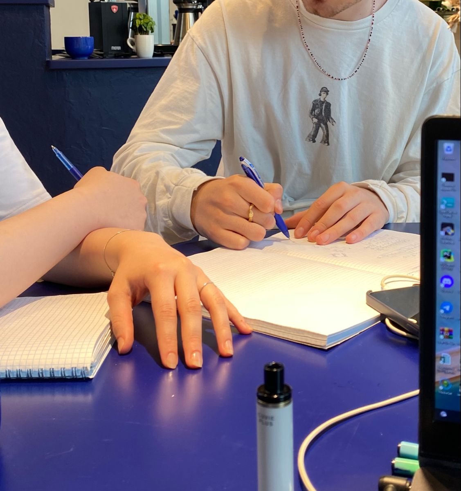
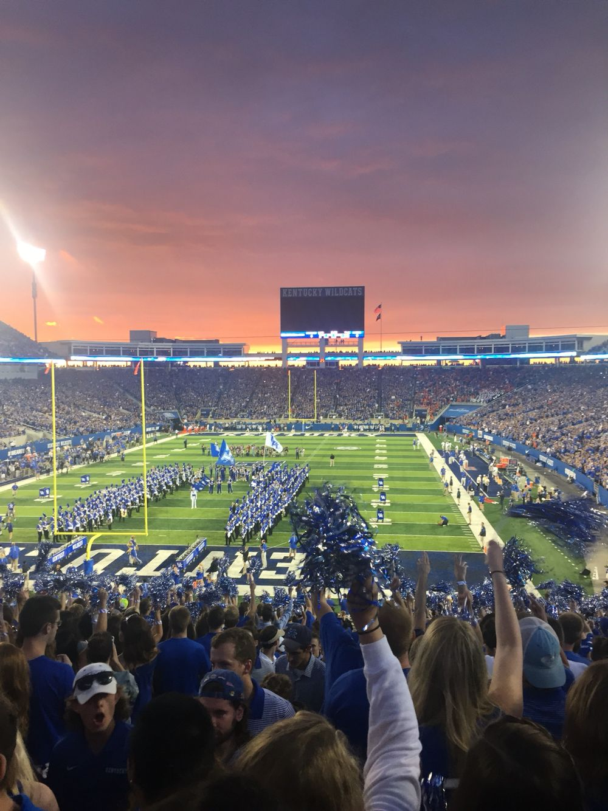

Technology
Software Engineering
Design, build and maintain software that people rely on.
- Web Development
- Databases
- Algorithms & Data Structures
2.6M ₸
/ year

ACADEMICS AT KDK
Six degrees. One shared approach: practical learning,
real projects and space to discover what you do best.
DISCOVER YOUR DIRECTION
Search by subject, skill or career. Save your favorites to revisit them later.
6 programs available
Design, build and maintain software that people rely on.
 Technology
Technology
Understand the ideas behind computing and intelligent systems.

TechnologyProtect networks, applications and digital information.
Turn data into useful insights with statistics and machine learning.

BusinessConnect business decisions with data and digital strategy.
Combine creativity and technology to shape digital experiences.
Try a broader search or reset your filters.
A LITTLE GUIDANCE
Start with what you enjoy. This quick guide suggests a program to explore, based on your interests.
A starting point for your research, not an aptitude assessment.
BEFORE YOUR FIRST LECTURE
Discover books from Open Library related to your field. These are discovery suggestions, not an official reading list.
Choose a topic and discover books. An internet connection is needed for new results.
LEARN BY DOING
Hands-on experiences connect your studies with the world beyond campus.
Build a portfolio through teamwork, prototypes and real problem solving.
Explore technology-equipped learning spaces and a community of curious people.
Explore campus →Connect your interests with a study plan and a future career direction.
Ask a question →
YOUR NEXT CHAPTER
Explore requirements, tuition and scholarship options.